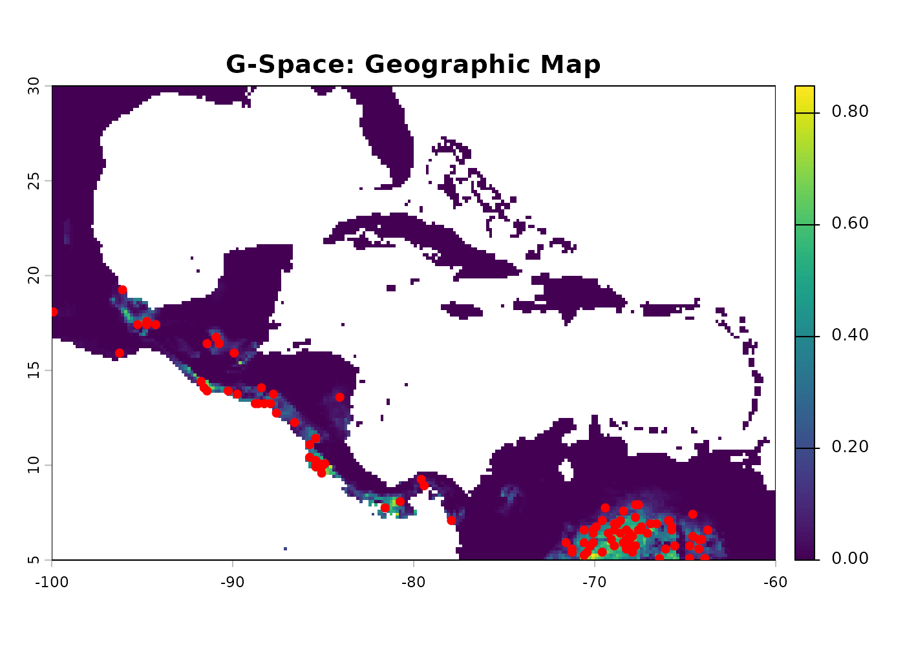
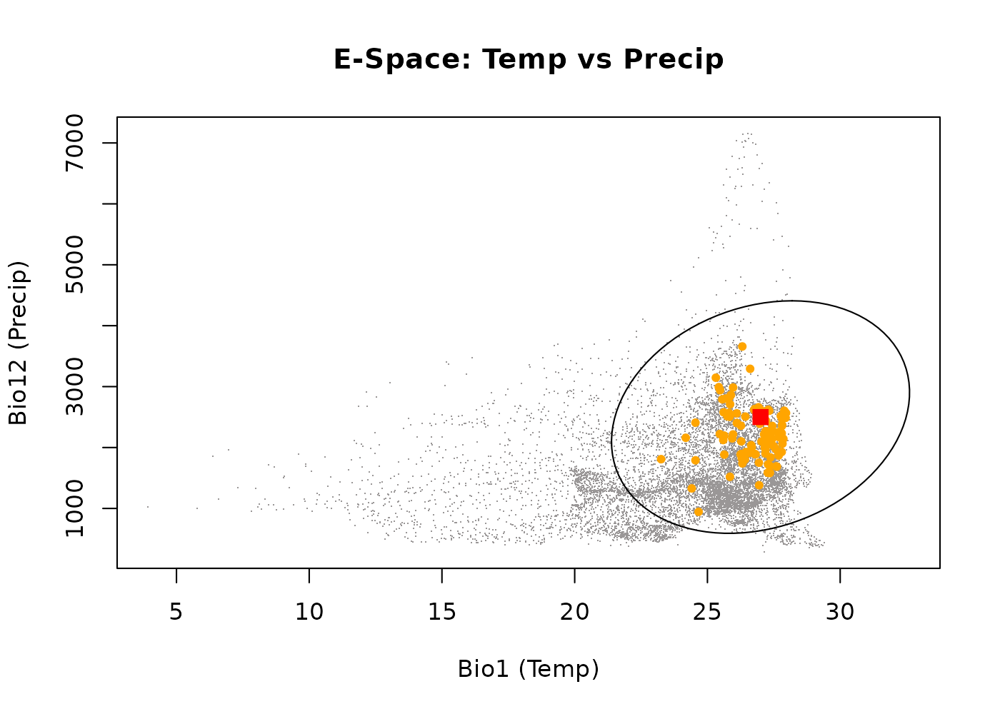
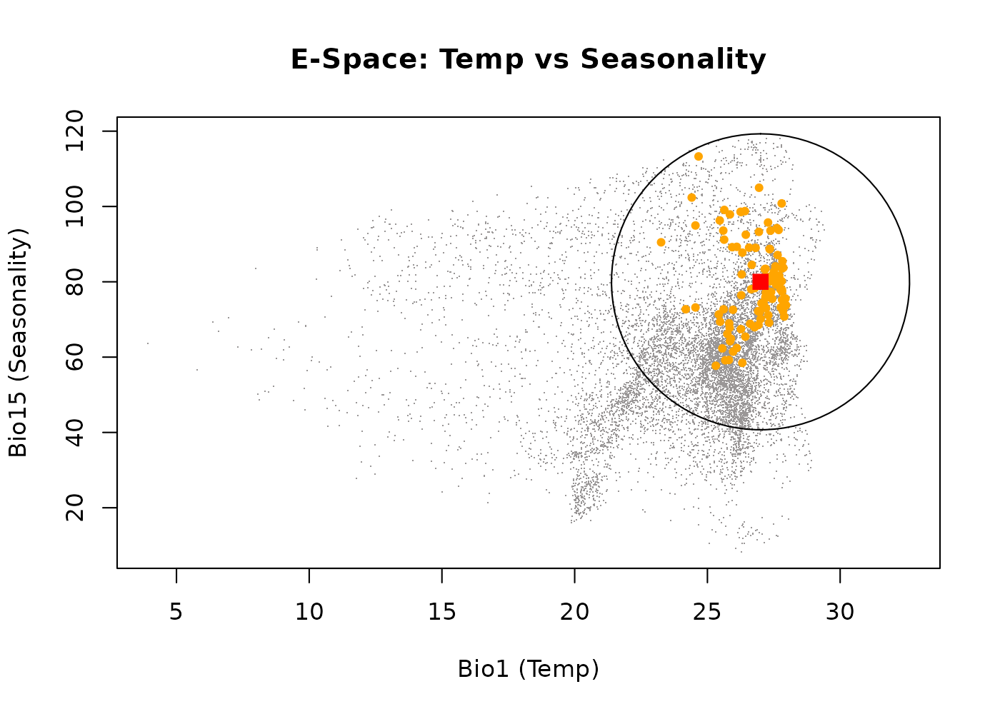
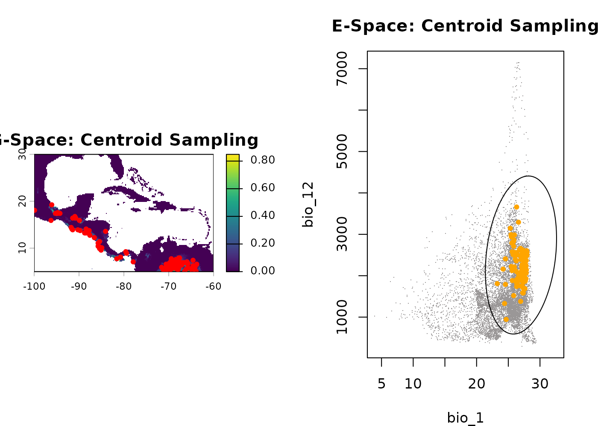
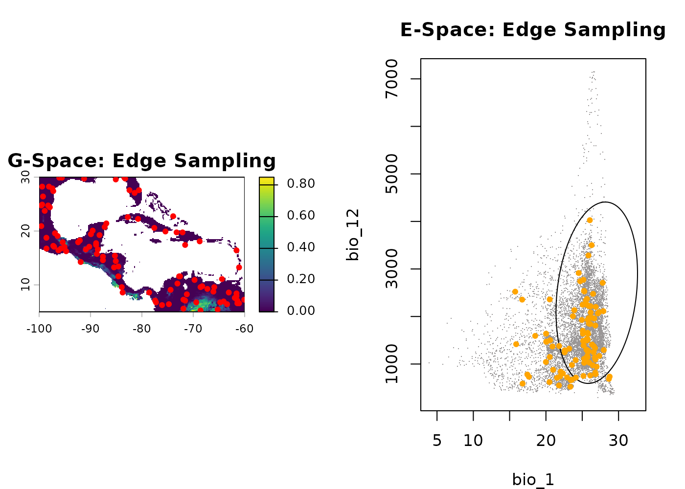
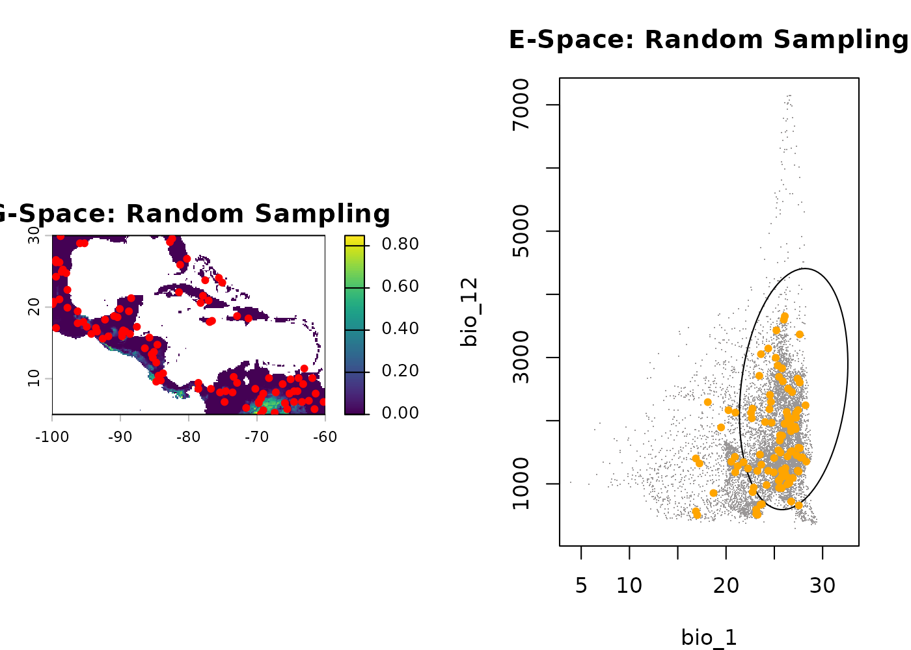
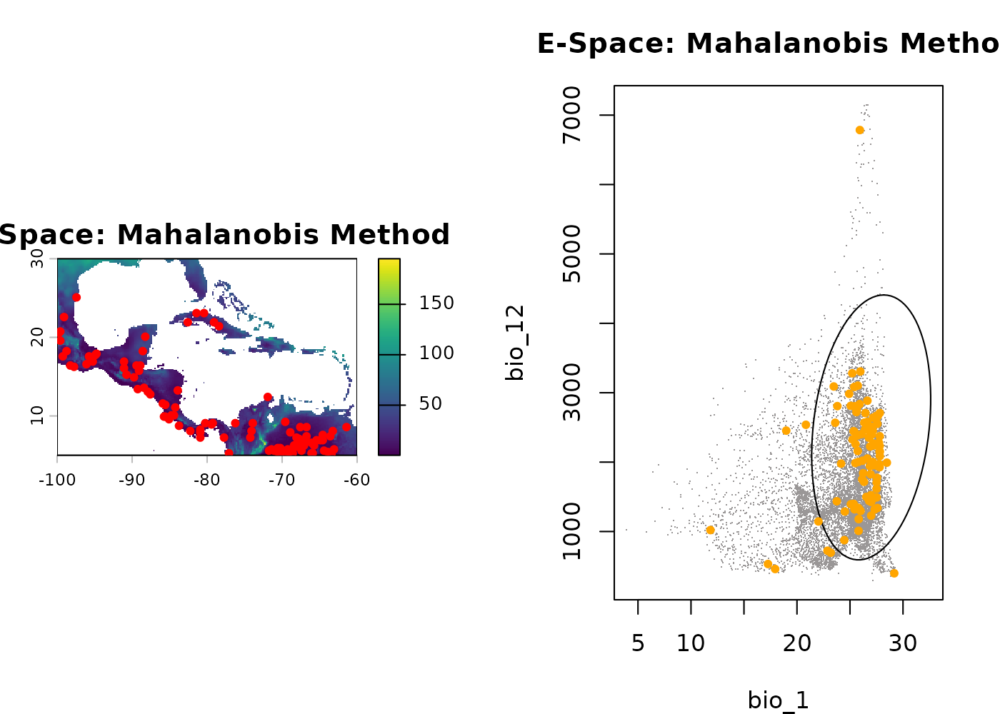

Generate occurrence data
Source:vignettes/generate_occurrence_data.Rmd
generate_occurrence_data.RmdSummary
- Description
- Getting ready
- Basic generation
- Effect of the sampling argument
- Effect of the method argument
- Effect of the strict argument
- Save and export
Description
The nicheR package allows you to simulate how a species
might be distributed across a landscape by generating synthetic
occurrence data from a continuous prediction surface. Rather than
viewing this as “sampling” empirical field data, the
sample_data() function acts as a virtual ecologist,
generating presence points across the available environmental background
based on the species’ theoretical preferences.
This vignette focuses exclusively on the sample_data()
function. We will explore how adjusting its core
arguments—sampling, method, and
strict—alters the spatial and environmental distribution of
the generated occurrences.
Getting ready
First, we load nicheR and terra. For this
vignette, we assume you have already defined a fundamental niche
ellipsoid and projected it onto geographic space to create a prediction
surface.
If you are unfamiliar with these prerequisite steps, please review the “Creating Ellipsoid Based Niches” and”Predict” vignettes first.
# Load packages
library(nicheR)
library(terra)
# 1. Load environmental background
bios <- terra::rast(system.file("extdata", "ma_bios.tif", package = "nicheR"))
vars <- c("bio_1", "bio_12", "bio_15")
# 2. Load reference niche (nicheR_ellipsoid object)
data("example_sp_4", package = "nicheR")
# 3. Load pre-calculated prediction surface (from previous vignette)
# This SpatRaster contains "suitability", "Mahalanobis", "suitability_trunc", etc.
pred <- terra::rast(system.file("extdata", "predictions_3d_rast.tif", package = "nicheR"))Basic generation
The sample_data() function generates a spatial data
frame of coordinates. By default, it requires the number of occurrences
you want to generate (n_occ), the prediction spatial raster
(prediction), and the specific layer to use as the
probability weight (prediction_layer).
Let’s generate a basic set of 100 occurrences using the default suitability layer.
# Generate basic occurrence data
occ_basic <- sample_data(
n_occ = 100,
prediction = pred,
prediction_layer = "suitability",
seed = 123
)
#> Starting: sample_data()
#> Done: sampled 100 points.
head(occ_basic)
#> x y bio_1 bio_12 bio_15 Mahalanobis suitability
#> 23354 -87.75000 13.750000 26.44637 1926 92.50568 1.3047519 0.52080691
#> 33085 -65.91667 7.083333 26.78357 1894 78.32585 3.4916432 0.17450155
#> 35473 -67.91667 5.416667 27.89421 2604 70.77233 1.6418095 0.44003338
#> 19492 -91.41667 16.416667 24.18323 2160 72.71249 4.5789394 0.10132017
#> 22870 -88.41667 14.083333 23.25510 1809 90.48694 5.8673258 0.05320181
#> 34512 -68.08333 6.083333 27.80744 2373 77.89075 0.8279358 0.66102219
#> suitability_trunc
#> 23354 0.52080691
#> 33085 0.17450155
#> 35473 0.44003338
#> 19492 0.10132017
#> 22870 0.05320181
#> 34512 0.66102219Visualizing basic generation
We can visualizendefined these generated points in both Geographic Space (G-Space) (the physical landscape) and Environmental Space (E-Space) (the multi-dimensional climate space). Every physical location on the map corresponds to a specific set of climate coordinates inside the fundamental niche ellipsoid.
1. Geographic Space
First, let’s look at the physical map. The background colors represent habitat suitability (green is high, brown/white is low). The black dots are the physical coordinates (Longitude/Latitude) where our 100 virtual individuals were generated. Because we generated points based on suitability, notice how the dots cluster in the greenest areas.
terra::plot(pred[["suitability"]], main = "G-Space: Geographic Map")
points(occ_basic[, c("x", "y")], pch = 20, col = "red", cex = 1.2)
2. Environmental Space Bio1 vs. Bio12
Now, let’s shift our view from geography to climate. Here, we plot the exact same 100 individuals, but instead of mapping their physical location, we map the climate they are experiencing. The gray dust represents the available background climate in our study area. The large ellipse is the fundamental niche boundary. The red square is the niche centroid for the species. The orange dots are our generated occurrences.
plot_ellipsoid(example_sp_4, background = as.data.frame(bios[[vars]]), dim = c(1, 2), pch = ".", col_bg = "#9a9797",
xlab = "Bio1 (Temp)", ylab = "Bio12 (Precip)", main = "E-Space: Temp vs Precip")
add_data(occ_basic, x = "bio_1", y = "bio_12", pts_col = "orange", pch = 20)
add_data(as.data.frame(t(example_sp_4$centroid)), x = "bio_1", y = "bio_12", pts_col = "red", pch = 15, cex = 1.5)
3. Environmental Space Bio1 vs. Bio15
Because niches are multi-dimensional, we must look at other axes. Here, we keep Temperature (Bio1) on the X-axis but change the Y-axis to Precipitation Seasonality (Bio15) to see how the species tolerates fluctuations in rainfall.
plot_ellipsoid(example_sp_4, background = as.data.frame(bios[[vars]]), dim = c(1, 3), pch = ".", col_bg = "#9a9797",
xlab = "Bio1 (Temp)", ylab = "Bio15 (Seasonality)", main = "E-Space: Temp vs Seasonality")
add_data(occ_basic, x = "bio_1", y = "bio_15", pts_col = "orange", pch = 20)
add_data(as.data.frame(t(example_sp_4$centroid)), x = "bio_1", y = "bio_15", pts_col = "red", pch = 15, cex = 1.5)
By default, the function generates points proportional to habitat suitability (the niche centroid). Therefore, you can see the orange dots clumping somewhat near the red centroid in E-Space, which translates to black dots clumping in the greenest areas of the G-Space map.
Effect of the sampling argument
The sampling argument determines the spatial bias of the
selection probability. It answers the question: Where within the
niche is the species most likely to be found?
centroid: The species strongly prefers its optimal conditions. Generates points clustered near the center of the niche.edge: The species is frequently pushed into marginal environments (e.g., due to competition). Generates points scattered toward the niche boundaries.random: The species is distributed uniformly across all suitable habitats, regardless of optimality.
occ_cent <- sample_data(100, pred, "suitability", sampling = "centroid", seed = 123)
#> Starting: sample_data()
#> Done: sampled 100 points.
occ_edge <- sample_data(100, pred, "suitability", sampling = "edge", seed = 123)
#> Starting: sample_data()
#>
#> Done: sampled 100 points.
occ_rand <- sample_data(100, pred, "suitability", sampling = "random", seed = 123)
#> Starting: sample_data()
#>
#> Done: sampled 100 points.Visualizing spatial bias
Let’s compare these three strategies side-by-side in both G-Space and E-Space.
1. Centroid Sampling
Notice how the orange dots huddle tightly around the red square in E-Space. Geographically, this translates to highly concentrated, clumped points on the map in only the most pristine habitats.
par(mfrow = c(1, 2), mar = c(4, 4, 3, 2))
terra::plot(pred[["suitability"]], main = "G-Space: Centroid Sampling"); points(occ_cent[, 1:2], pch = 20, col = "red")
plot_ellipsoid(example_sp_4, background = as.data.frame(bios[[vars]]), dim = c(1, 2), pch = ".", col_bg = "#9a9797", main = "E-Space: Centroid Sampling")
add_data(occ_cent, x = "bio_1", y = "bio_12", pts_col = "orange", pch = 20)
2. Edge Sampling
Here, the orange dots are repelled from the center and hug the outer boundary of the ellipse. Geographically, this forces the species into fragmented, peripheral habitats on the fringes of its range.
par(mfrow = c(1, 2), mar = c(4, 4, 3, 2))
terra::plot(pred[["suitability"]], main = "G-Space: Edge Sampling"); points(occ_edge[, 1:2], pch = 20, col = "red")
plot_ellipsoid(example_sp_4, background = as.data.frame(bios[[vars]]), dim = c(1, 2), pch = ".", col_bg = "#9a9797", main = "E-Space: Edge Sampling")
add_data(occ_edge, x = "bio_1", y = "bio_12", pts_col = "orange", pch = 20)
3. Random Sampling
The points are scattered broadly across all suitable environments without bias toward the core or the edge.
par(mfrow = c(1, 2), mar = c(4, 4, 3, 2))
terra::plot(pred[["suitability"]], main = "G-Space: Random Sampling"); points(occ_rand[, 1:2], pch = 20, col = "red")
plot_ellipsoid(example_sp_4, background = as.data.frame(bios[[vars]]), dim = c(1, 2), pch = ".", col_bg = "#9a9797", main = "E-Space: Random Sampling")
add_data(occ_rand, x = "bio_1", y = "bio_12", pts_col = "orange", pch = 20)
Effect of the method argument
The method argument controls the underlying mathematical
weight used to draw the samples.
suitability: Weights the probability of occurrence linearly based on the 0-1 habitat suitability index.mahalanobis: Weights the probability based on the multivariate environmental distance from the centroid. This often creates a more dramatic, non-linear drop-off in generation probability compared to suitability.
occ_meth_suit <- sample_data(100, pred, "suitability", method = "suitability", seed = 123)
#> Starting: sample_data()
#> Done: sampled 100 points.
occ_meth_maha <- sample_data(100, pred, "Mahalanobis", method = "mahalanobis", seed = 123)
#> Starting: sample_data()
#>
#> Done: sampled 100 points.Visualizing probability weights
1. Suitability Method
Points are drawn linearly based on habitat quality.
par(mfrow = c(1, 2), mar = c(4, 4, 3, 2))
terra::plot(pred[["suitability"]], main = "G-Space: Suitability Method"); points(occ_meth_suit[, 1:2], pch = 20, col = "red")
plot_ellipsoid(example_sp_4, background = as.data.frame(bios[[vars]]), dim = c(1, 2), pch = ".", col_bg = "#9a9797", main = "E-Space: Suitability Method")
add_data(occ_meth_suit, x = "bio_1", y = "bio_12", pts_col = "orange", pch = 20)2. Mahalanobis Method
Because Mahalanobis distance penalizes deviations from the centroid heavily, generating points based on this method creates an even stricter concentration of points in optimal environments. This is highly useful for simulating sensitive, specialist species.
par(mfrow = c(1, 2), mar = c(4, 4, 3, 2))
terra::plot(pred[["Mahalanobis"]], main = "G-Space: Mahalanobis Method"); points(occ_meth_maha[, 1:2], pch = 20, col = "red")
plot_ellipsoid(example_sp_4, background = as.data.frame(bios[[vars]]), dim = c(1, 2), pch = ".", col_bg = "#9a9797", main = "E-Space: Mahalanobis Method")
add_data(occ_meth_maha, x = "bio_1", y = "bio_12", pts_col = "orange", pch = 20)
Effect of the strict argument
By default, generating occurrences allows points to fall slightly
outside the strict boundaries of the fundamental niche ellipsoid
(strict = FALSE). This is ecologically realistic, as it
simulates sink populations, source-sink dynamics, or the influence of
unmeasured micro-climates.
Setting strict = TRUE (and using a truncated prediction
layer) establishes a hard boundary, forbidding any generated points from
falling in unsuitable environments.
# strict = FALSE (Allows points outside the ellipse)
occ_lax <- sample_data(100, pred, "suitability", strict = FALSE, seed = 123)
#> Starting: sample_data()
#> Done: sampled 100 points.
# strict = TRUE (Restricts points strictly to the ellipse using truncated layers)
occ_strict <- sample_data(100, pred, "suitability_trunc", strict = TRUE, seed = 123)
#> Starting: sample_data()
#>
#> Done: sampled 100 points.Visualizing boundary limits
1. Strict = FALSE
In the E-Space plot below, notice how a few rogue orange dots fall just outside the purple boundary line of the ellipsoid. These represent our simulated sink populations.
par(mfrow = c(1, 2), mar = c(4, 4, 3, 2))
terra::plot(pred[["suitability"]], main = "G-Space: Strict = FALSE"); points(occ_lax[, 1:2], pch = 20, col = "red")
plot_ellipsoid(example_sp_4, background = as.data.frame(bios[[vars]]), dim = c(1, 2), pch = ".", col_bg = "#9a9797", main = "E-Space: Strict = FALSE")
add_data(occ_lax, x = "bio_1", y = "bio_12", pts_col = "orange", pch = 20)2. Strict = TRUE
Here, the generation algorithm respects the hard mathematical threshold—every single orange dot is contained strictly within the boundary line.
par(mfrow = c(1, 2), mar = c(4, 4, 3, 2))
terra::plot(pred[["suitability_trunc"]], main = "G-Space: Strict = TRUE"); points(occ_strict[, 1:2], pch = 20, col = "red")
plot_ellipsoid(example_sp_4, background = as.data.frame(bios[[vars]]), dim = c(1, 2), pch = ".", col_bg = "#9a9797", main = "E-Space: Strict = TRUE")
add_data(occ_strict, x = "bio_1", y = "bio_12", pts_col = "orange", pch = 20)
dev.off()
#> null device
#> 1Save and export
Once you are satisfied with your generated occurrence points, you can
easily save the resulting data frame for use in other software or later
R sessions. We will save the occ_basic dataset we generated
at the very beginning of this vignette.
# Save the basic generated occurrence data frame to your local directory
# saveRDS(occ_basic, file = "data/generate_occurrences.rds")
# To load this data back into a future session:
# my_occurrences <- readRDS("data/virtual_occurrences.rds")